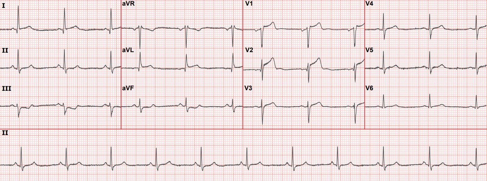
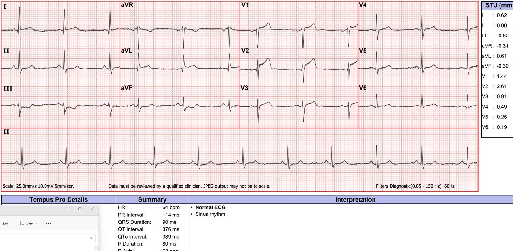
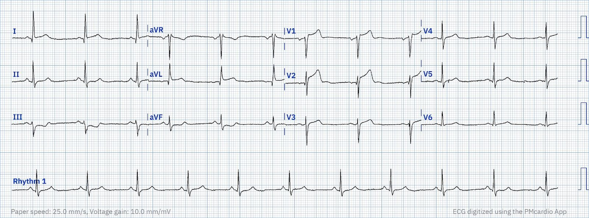
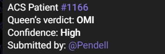
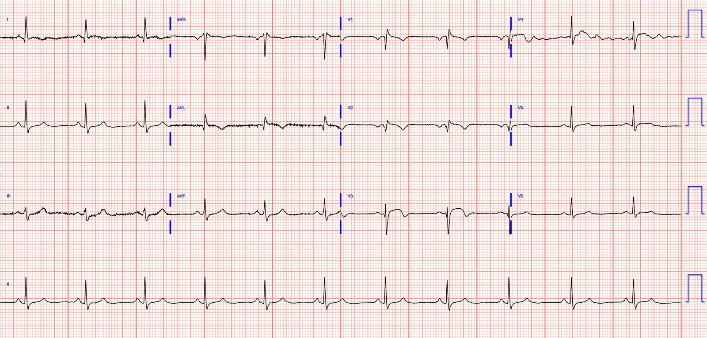
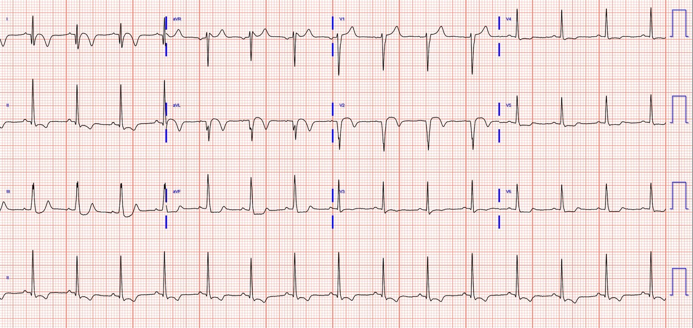
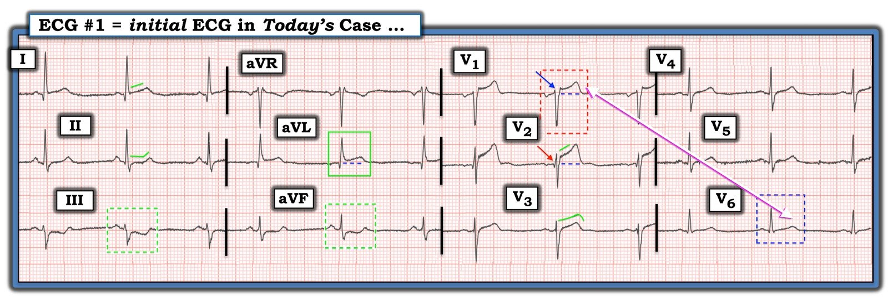

23/05/2023 — Người đàn ông đầu tuổi 40 đau ngực với “điện tâm đồ bình thường” theo thuật toán máy tính. Có nên tránh làm gián đoạn bác sĩ để đọc điện tâm đồ của ông ấy?
Bản dịch tiếng Việt của bài "A man in his early 40s with chest pain a “normal ECG” by computer algorithm. Should we avoid interrupting a physician to interpret his ECG?" – Dr. Smith’s ECG Blog. Giữ nguyên toàn bộ 8 hình ảnh của bản gốc.
Tác giả: Pendell Meyers
Một người đàn ông đầu tuổi 40 xuất hiện đau ngực khởi phát cấp tính. Cơn đau ngực bắt đầu khoảng 24 giờ trước, nhưng không có thông tin chi tiết về việc cơn đau có lúc xuất hiện lúc biến mất hay không, hoặc điều gì đã khiến ông đi khám 24 giờ sau khi khởi phát.
Đội cấp cứu ngoài viện (EMS) đến và ghi điện tâm đồ này:


Xem bên dưới cùng điện tâm đồ này kèm kết quả đọc tự động bằng máy tính, sử dụng thuật toán điện tâm đồ Glasgow, thuật toán mà có vẻ như được nhiều nhà cung cấp và thiết bị khác nhau sử dụng


Vậy mà nó vẫn ghi “bình thường”.
Như phần lớn mọi người sẽ đồng ý, điện tâm đồ này cho thấy các dấu hiệu có độ đặc hiệu cao của OMI vùng trước bên, thậm chí trong ca này còn đạt tiêu chuẩn STEMI. Do đó, đây rõ ràng là OMI STEMI dương tính (STEMI(+) OMI) cho đến khi chứng minh được điều ngược lại.
Nếu dùng chương trình AI Queen of Hearts thay vào đó, thì đây là những gì nhân viên cấp cứu ngoài viện sẽ thấy:




Nhiều tác giả cho rằng kết quả đọc “bình thường” hoặc “ngoài ra bình thường” (otherwise normal) của thuật toán máy tính có tỷ lệ phát hiện quan trọng có thể làm thay đổi xử trí thấp đến mức họ không nghĩ là đáng làm gián đoạn bác sĩ để bác sĩ đọc lại (overread) điện tâm đồ. Xem phần bàn luận và các đường link ở cuối ca để biết thêm về cuộc tranh luận này.
Nhưng nhân viên cấp cứu ngoài viện và bác sĩ khoa cấp cứu (ED) trong ca này không theo quan điểm đó. Thay vào đó, họ xem điện tâm đồ ngay lập tức, bất kể máy tính đọc là “bình thường”.
Và dĩ nhiên họ kích hoạt phòng thông tim (cath lab) ngay lập tức, tại đó bệnh nhân được phát hiện có tắc cấp do huyết khối (TIMI 0) LAD đoạn gần, cùng với tắc D1 do thuyên tắc. LCX và RCA được mô tả là “bình thường” trong báo cáo thông tim. LAD và D1 được đặt stent, nhưng đáng tiếc là dòng chảy không thể phục hồi tốt dù đã nỗ lực (họ ghi dòng chảy TIMI sau can thiệp vẫn là 0). Họ có nhắc đến một ít tuần hoàn bàng hệ mờ nhạt từ RCA sang LAD.
Sau chụp mạch vành, kết quả troponin I độ nhạy cao đầu tiên là 7.259 ng/L (giới hạn trên tham chiếu (URL) bách phân vị thứ 99 ở nam giới của xét nghiệm này là 20 ng/L). Bốn kết quả troponin tiếp theo đều trả về “lớn hơn 25.000 ng/L”, đây đơn giản là giới hạn báo cáo trên của phòng xét nghiệm tại cơ sở này.
Đây là điện tâm đồ của bệnh nhân vài giờ sau can thiệp:




Siêu âm tim cho thấy giảm động thành trước đoạn giữa, vách liên thất đoạn giữa [người dịch: nguyên văn ghi “intravascular septum”, nhiều khả năng là lỗi đánh máy của “interventricular septum”] và thành trước vùng mỏm. Phân suất tống máu (EF) 40%.
Những điểm cần học:
1. Bạn không thể hoàn toàn tin vào các thuật toán điện tâm đồ máy tính thông thường để phát hiện ngay cả OMI STEMI dương tính, như trong ca này
2. Bạn càng không thể tin chúng trong việc diễn giải các dấu hiệu OMI STEMI âm tính (STEMI(-) OMI) trên điện tâm đồ.
Còn quá sớm để nói rằng nhân viên cấp cứu ngoài viện và bác sĩ không cần bận tâm đọc các điện tâm đồ được thuật toán máy tính gán nhãn “bình thường” hoặc “ngoài ra bình thường”. Bạn sẽ chấp nhận bao nhiêu lần bị làm gián đoạn không cần thiết để tìm ra một ca như thế này? bằng cách bị làm gián đoạn??? Với tôi, con số đó thực sự, thực sự rất cao. Cao hơn nhiều so với những gì đã được nghiên cứu cho đến nay. Có lẽ trong tương lai, với việc đọc điện tâm đồ tự động tốt hơn, như cũng thấy trong ca này, mọi chuyện có thể sẽ khác.
Dưới đây là một số ca trong đó:
A middle aged female with “heartburn” and a “normal ECG” per the computer (Một phụ nữ trung niên bị “ợ nóng” và có “điện tâm đồ bình thường” theo máy tính)
Trust a computer read of “Normal ECG” at your peril! (Tin vào kết quả “điện tâm đồ bình thường” do máy tính đọc thì bạn tự chuốc lấy rủi ro!)
Computer says “normal,” troponin undetectable. (Máy tính nói “bình thường”, troponin không phát hiện được.)
This ECG was interpreted as completely NORMAL by the computer: What about it is THE critical finding?? (Điện tâm đồ này được máy tính đọc là hoàn toàn BÌNH THƯỜNG: Đâu là dấu hiệu QUYẾT ĐỊNH trên đó??)
Occlusion/reperfusion through 6 ‘normal’ ECGs (Tắc/tái tưới máu qua sáu điện tâm đồ ‘bình thường’)
30 yo woman with trapezius pain. HEART Pathway = 0. Computer “Normal” ECG. Reality: ECG is Diagnostic of LAD Occlusion. (Phụ nữ ba mươi tuổi đau cơ thang. HEART Pathway bằng không. Máy tính đọc điện tâm đồ “bình thường”. Thực tế: điện tâm đồ chẩn đoán tắc LAD.)
65 year old with syncope and a ‘normal’ ECG: discharge home? (Bệnh nhân sáu mươi lăm tuổi bị ngất và có điện tâm đồ ‘bình thường’: cho về nhà?)
A 50-something with acute chest pain, a computer “Normal” ECG, and a HEART score of 3 (low risk) (Bệnh nhân ngoài năm mươi tuổi đau ngực cấp, điện tâm đồ máy tính đọc “bình thường” và điểm HEART bằng ba (nguy cơ thấp))
30-something woman with a HEART score of zero, EDACS of 2, computer “Normal” ECG, and initial troponin < Limit of Detection (Phụ nữ ngoài ba mươi tuổi, điểm HEART bằng không, EDACS bằng hai, điện tâm đồ máy tính đọc “bình thường”, và troponin ban đầu < giới hạn phát hiện)
50 year old with acute chest pain, with ‘normal’ ECG and falling troponin (Bệnh nhân năm mươi tuổi đau ngực cấp, điện tâm đồ ‘bình thường’ và troponin đang giảm)
Y văn
Emergent cardiac outcomes in patients with normal electrocardiograms in the emergency department. (Các kết cục tim mạch cấp cứu ở bệnh nhân có điện tâm đồ bình thường tại khoa cấp cứu.) Am J Emerg Med. 2022 Jan;51:384-387. doi: 10.1016/j.ajem.2021.11.023. Epub 2021 Nov 17.
Chúng tôi đã viết bài xã luận này về bài báo trên (toàn văn). Tài liệu tham khảo: Bracey
A, Meyers HP, Smith SW. Emergency physicians should interpret every
triage ECG, including those with a computer interpretation of “normal”. (Bác sĩ cấp cứu nên đọc mọi điện tâm đồ lúc phân loại, kể cả những điện tâm đồ được máy tính đọc là “bình thường”.)
Am J Emerg Med. 2022 May;55:180-182. doi: 10.1016/j.ajem.2022.03.022.
Epub 2022 Mar 17. PMID: 35361516.
Tóm tắt:
Nghiên cứu này chỉ xem xét chưa đến 1000 ca, con số còn xa mới đủ (xem phân tích bên dưới), và họ dùng bác sĩ tim mạch làm tiêu chuẩn vàng (một tiêu chuẩn vàng rất kém), CHỨ KHÔNG dùng sự có mặt hay vắng mặt của nhồi máu cơ tim do tắc (Occlusion MI) (điều chúng tôi đã làm trong tất cả các nghiên cứu điện tâm đồ của mình, và phải được xác định bằng 1) dòng chảy TIMI 0/2 trên chụp mạch vành hoặc 2) có tổn thương thủ phạm + dòng chảy TIMI 3 và troponin rất cao.
Vì vậy nghiên cứu này không có giá trị và phải bị bỏ qua.
Tôi có ở đây 38 ca điện tâm đồ “máy tính đọc bình thường” nhưng thực ra bất thường nghiêm trọng, và phần lớn là các ca tắc mạch vành cấp bị bỏ sót (OMI cấp bị bỏ sót — Missed Acute OMI), và hầu hết đã được bác sĩ nhận ra.
Chúng tôi đã viết bài xã luận này trên Journal of Electrocardiology năm 2019. Litell JM, Meyers HP, Smith SW. Emergency physicians should be shown all triage ECGs, even those with a computer interpretation of “Normal.” (Bác sĩ cấp cứu nên được xem tất cả điện tâm đồ lúc phân loại, kể cả những điện tâm đồ được máy tính đọc là “bình thường”.) J Electrocardiol [Internet] 2019;54:79–81. Có tại: http://dx.doi.org/10.1016/j.jelectrocard.2019.03.003
Trích đoạn:
“Để minh họa những giới hạn do cỡ mẫu gây ra, dữ liệu gần đây từ cơ sở của chúng tôi cho thấy chúng tôi xác định được khoảng 225 ca nhồi máu cơ tim (MI) típ I trong một năm điển hình. Trong số này có khoảng 60 ca nhồi máu cơ tim do tắc (OMI) với ST chênh lên rõ ràng (không ca nào trong số đó sẽ bị máy tính gọi là “bình thường”) và khoảng 165 ca nhồi máu cơ tim không ST chênh lên (Non-STEMI). Trong số các ca Non-STEMI trong đoàn hệ của chúng tôi, khoảng 25% thực sự có tắc mạch vành cấp. Mặc dù phần lớn trong khoảng 40 ca NSTEMI có tắc này sẽ được thuật toán máy tính đọc là bất thường theo một cách nào đó (thường là bất thường đoạn ST hoặc sóng T không đặc hiệu), chúng sẽ không được gán nhãn STEMI. Chúng tôi có thể ước tính một cách thận trọng rằng 5 trong số 40 ca OMI cấp không có ST chênh lên đủ để chẩn đoán này sẽ bị máy tính đọc sai là “bình thường”. Tức là mỗi năm có năm ca OMI bị thuật toán máy tính đọc sai là bình thường. Trong cùng năm đó, chúng tôi ghi khoảng 24.000 điện tâm đồ tại khoa cấp cứu, trong đó 20% được máy tính gọi là “bình thường”. Gộp lại, các dữ liệu này gợi ý rằng trong số 5000 điện tâm đồ “bình thường” trong một năm, khoảng 5 (0,1%) thực ra là OMI cấp đã bị thuật toán máy tính diễn giải sai là hoàn toàn bình thường. Một cỡ mẫu 855 không có cơ hội nào để đưa ra một kết luận có ý nghĩa về độ tin cậy của kết quả “bình thường” do máy tính đọc. Công bằng mà nói, không chắc rằng một bác sĩ cấp cứu trung bình sẽ phát hiện được vài ca bình thường giả này, nhưng chắc chắn chúng sẽ bị bỏ sót nếu bác sĩ không bao giờ nhìn thấy chúng. Chúng tôi thà bị làm gián đoạn.”

==================================
BÌNH LUẬN CỦA TÔI, bởi KEN GRAUER, MD (23/5/2023):
==================================
Ca hôm nay minh họa một loạt điểm quan trọng mà chúng tôi liên tục nhấn mạnh thông qua các ca được trình bày trên Dr. Smith’s ECG Blog:
- Điểm #1: Nhân viên cấp cứu ngoài viện và bác sĩ khoa cấp cứu trong ca hôm nay đã làm đúng khi tự mình xem ngay lập tức điện tâm đồ ban đầu (và không chấp nhận kết quả đọc “bình thường” của máy tính). Các chương trình đọc điện tâm đồ bằng máy tính hiện có (và từ trước đến nay vẫn luôn như vậy) về bản chất là có khiếm khuyết! Đó là vì cho đến gần đây — các chương trình máy tính đều dựa trên tiêu chuẩn STEMI — mà như chúng tôi đã chứng minh, sẽ bỏ sót ước tính 25-30% các ca tắc mạch vành cấp (Xem bình luận của tôi trong bài đăng ngày 31 tháng Bảy năm 2020 trên Dr. Smith’s ECG Blog).
- Điểm #2: Ca hôm nay minh họa việc các chương trình đọc điện tâm đồ bằng máy tính hiện có đôi khi có thể bỏ sót ngay cả nhồi máu STEMI (!) — như đã xảy ra trong ca hôm nay, khi điện tâm đồ ban đầu bị máy tính gán nhãn “bình thường”. Tôi đã nhiều lần trình bày quan điểm của mình trên ECG Blog này — rằng tôi thấy các chương trình đọc điện tâm đồ bằng máy tính hiện có là hữu ích vì tôi biết CÁCH sử dụng chúng (Xem bình luận của tôi ở cuối trang trong bài đăng ngày 4 tháng Hai năm 2022 của Dr. Smith’s ECG Blog). Nhưng bất kể bạn nghĩ gì về các kết quả đọc bằng máy tính hiện nay — điểm MẤU CHỐT là bạn không bao giờ nên chấp nhận kết quả đọc của máy tính là đúng cho đến khi CHÍNH BẠN đã kiểm chứng kết quả đó bằng chính mắt mình! Và, nếu bạn không đồng ý với những gì máy tính nói (vì BẠN nghĩ điện tâm đồ gợi ý một quá trình cấp tính) — thì ý kiến CỦA BẠN mới là ý kiến cần được làm theo!
- Điểm #3: Sự trợ giúp đang đến! Như chúng tôi đã nhiều lần chứng minh (bằng chứng là bài hôm nay — cùng nhiều bài khác) — ứng dụng AI “Queen of Hearts” (QoH) mới đã cho thấy độ nhạy và độ đặc hiệu đáng kinh ngạc trong nhận diện tắc mạch vành cấp (bao gồm cả những ca có hoặc không đạt tiêu chuẩn STEMI) — vì vậy rất sớm thôi, nguồn lực tuyệt vời này sẽ ngày càng được sử dụng rộng rãi hơn để hỗ trợ nhận diện OMI cấp (Xem bình luận của tôi ở cuối trang trong bài đăng ngày 31 tháng Ba năm 2023 của Dr. Smith’s ECG Blog).
- Xin nhấn mạnh: Dù ứng dụng QoH tốt đến đâu trong việc phân biệt OMI cấp với không phải OMI — khuyến nghị của tôi vẫn là tất cả các bác sĩ lâm sàng nên tự mình xem từng điện tâm đồ. Dù vậy — độ chính xác của bác sĩ lâm sàng trong nhận diện sớm OMI cấp chắc chắn sẽ cải thiện khi việc sử dụng kết quả đọc của QoH ngày càng tăng.
- Điểm #4: Một lần nữa — bệnh sử là thành phần MẤU CHỐT để đọc điện tâm đồ tối ưu. Cụ thể, bệnh sử trong ca hôm nay là “đau ngực bắt đầu 24 giờ trước — không có thông tin về việc cơn đau có lúc xuất hiện lúc biến mất hay kéo dài liên tục — cũng không rõ điều gì khiến bệnh nhân đi khám 24 giờ sau khởi phát”. Nhận biết thời gian triệu chứng kéo dài trong ca hôm nay (gợi ý rằng triệu chứng có lẽ không dữ dội liên tục — nếu không, chúng ta đã có thể chờ đợi bệnh nhân đến khám sớm hơn 24 giờ) — giúp chúng ta chuẩn bị cho: i) sóng Q đã hình thành ở chuyển đạo V2; và, ii) mức ST chênh lên nhìn chung khiêm tốn mặc dù thông tim cho thấy tắc hoàn toàn LAD đoạn gần và nhánh chéo thứ 1 (Xem bàn luận thêm về các dấu hiệu này ở bên dưới).
- Điểm #5: Điện tâm đồ ban đầu trong ca hôm nay đáng được xem xét chi tiết để hiểu vì sao bác sĩ Meyers nói rằng nó cho thấy “các dấu hiệu có độ đặc hiệu cao của OMI vùng trước bên”. Tôi phân tích các dấu hiệu điện tâm đồ cụ thể này ở Hình 1 — trong đó tôi đã sao chép lại và đánh dấu điện tâm đồ ban đầu này.


Điện tâm đồ ban đầu trong ca hôm nay:
Nhịp trong điện tâm đồ #1 là nhịp xoang khoảng ~65 lần/phút (Nhịp thực ra hoàn toàn đều — với 3 nhát đầu tiên được lặp lại trong mỗi bộ 3 chuyển đạo ghi đồng thời). Các khoảng (PR, QRS, QTc) và trục mặt phẳng trán đều bình thường. Không có lớn các buồng tim.
- Chuyển đạo đáng lo ngại nhất là chuyển đạo V2. Có một sóng Q ở chuyển đạo V2 lẽ ra không được có (mũi tên ĐỎ) — nhất là vì đã có sự mất sóng R so với sóng dương khởi đầu nhỏ-nhưng-chắc-chắn-có của phức bộ QRS ở chuyển đạo V1 (tức là mũi tên XANH DƯƠNG ở chuyển đạo này làm nổi bật sóng r khởi đầu ở V1).
- Theo tính toán của máy — có 2 mm ST chênh lên tại điểm J ở chuyển đạo V2, kèm thẳng đuỗn ở phần đầu của đoạn khởi đầu ST (đường XANH LÁ ở chuyển đạo này). Dù một mức ST chênh lên dốc lên thoai thoải thường gặp như một dấu hiệu bình thường ở chuyển đạo V2 — mức ST chênh lên thấy trên điện tâm đồ #1 có vẻ quá mức, nhất là khi đi kèm sóng Q bất thường, ST thẳng đuỗn và đáy sóng T quá rộng ở chuyển đạo này. Ở bệnh nhân đau ngực đã 24 giờ này — tôi diễn giải ST-T ở chuyển đạo V2 là tối cấp.
- Ủng hộ cho việc có ST chênh lên tối cấp ở chuyển đạo V2 — là ST chênh lên hơn 1 mm cùng sóng T dương cao đến bất ngờ ở chuyển đạo V1. Khi không có LVH hay blốc nhánh — đây hiếm khi là dấu hiệu bình thường (nhất là ở bệnh nhân mới đau ngực và có các dấu hiệu điện tâm đồ đáng ngờ khác).
- Ngoài ra — có “mất cân đối“ sóng T, ở chỗ sóng T ở chuyển đạo V1 cao hơn sóng T ở chuyển đạo V6 (tức là so sánh biên độ tương đối của sóng T trong các hình chữ nhật nét đứt ĐỎ so với XANH DƯƠNG ở Hình 1).
ĐIỂM THEN CHỐT (PEARL): Khi sóng T ở tất cả các chuyển đạo trước tim đều dương (như trên điện tâm đồ #1) — sóng T ở chuyển đạo V1 thường không cao hơn sóng T ở chuyển đạo V6. Hiện tượng “mất cân đối sóng T trước tim” (T wave imbalance) này không thường gặp — và trong bối cảnh lâm sàng “phù hợp”, nó có liên quan với OMI cấp (Xem Manno và cs.: JACC 1:1213, 1983 — và bài ngày 17 tháng Bảy năm 2013 của Salim Rezaie trên ALiEM).
- LƯU Ý: Điều này không có nghĩa là sóng T cao, dương ở chuyển đạo V1 không thể đôi khi là kết quả của một biến thể tái cực hoặc hình ảnh soi gương của “tăng gánh” thất trái đôi khi thấy ở các chuyển đạo trước. Thay vào đó — điều này chỉ đơn giản muốn nói rằng đôi khi — tôi nhận thấy việc nhận ra một sóng T cao, dương ở chuyển đạo V1 rõ ràng cao hơn sóng T ở chuyển đạo V6 là một manh mối gợi ý hội chứng vành cấp mà nếu không thì tôi có thể đã không nhận ra (Để xem thêm ví dụ về dấu hiệu này — Xem Bình luận của tôi ở cuối trang trong bài ngày 23 tháng Mười năm 2020 — trong bài ngày 1 tháng Sáu năm 2022 — và trong bài ngày 26 tháng Ba năm 2022 của Dr. Smith’s Blog).
Các dấu hiệu ST-T bất thường khác trên điện tâm đồ #1:
- Chuyển đạo V3 kế bên cũng bất thường. Xin nhấn mạnh: Nếu chỉ xét riêng — tôi không nhất thiết diễn giải chuyển đạo V3 là bất thường. Nhưng trong bối cảnh “mất cân đối” sóng T cùng gợi ý mạnh về ST-T chênh lên tối cấp ở các chuyển đạo V1 và V2 — tôi diễn giải ST thẳng đuỗn (đường XANH LÁ) ở chuyển đạo V3 là sự lan rộng của quá trình cấp tính.
- T.B. (P.S.): Việc sóng R “khỏe” xuất hiện trở lại ở chuyển đạo V3 — ủng hộ nghi ngờ của chúng tôi rằng sự mất sóng r (từ chuyển đạo V1 sang V2), và sóng Q khởi đầu hình thành ở chuyển đạo V2 là “thật” và là dấu chỉ của nhồi máu.
- Có ST chênh lên ở chuyển đạo aVL. Như tôi đã bàn trong Bình luận của tôi ở bài ngày 21 tháng Mười Một năm 2020 trên Dr. Smith’s ECG Blog — Birnbaum và cs. (Am Heart J 131:38, 1996) đã nhấn mạnh giá trị chẩn đoán của việc nhận ra ST chênh lên ở chuyển đạo này — dấu hiệu này hướng tới tổn thương LAD đoạn gần và/hoặc nhánh chéo thứ 1 hơn là tắc LCx khi có ST chênh lên ở một hoặc nhiều chuyển đạo trước.
- Chuyển đạo III và aVF biểu hiện hình ảnh ST-T ngược chiều soi gương so với chuyển đạo aVL (So sánh ST-T trong các hình chữ nhật XANH LÁ nét liền và nét đứt ở các chuyển đạo này). Đây là các thay đổi soi gương.
- Trong bối cảnh ST chênh xuống soi gương ngược chiều như ảnh gương ở các chuyển đạo III và aVF — tôi diễn giải ST dẹt ở chuyển đạo II (đường XANH LÁ ở chuyển đạo này) là một thay đổi soi gương ở chuyển đạo dưới thứ 3 này.
- Cuối cùng — chuyển đạo I (chuyển đạo bên cao còn lại) biểu hiện ST chênh lên kín đáo kèm ST thẳng đuỗn (đường XANH LÁ) — điều mà, trong bối cảnh các dấu hiệu khác ở chuyển đạo chi, có ý nghĩa củng cố cho các thay đổi ST-T ở chuyển đạo aVL.
Tổng hợp lại tất cả:
Điện tâm đồ ban đầu ở Hình 1 phù hợp với bệnh sử và kết quả thông tim là tắc cấp LAD đoạn gần (cũng như nhánh chéo thứ 1).
- Vị trí tắc cấp ở LAD đoạn gần được gợi ý bởi ST chênh lên bắt đầu ngay từ chuyển đạo V1, với ST chênh lên tối đa ở chuyển đạo V2. Điều này còn được củng cố thêm bởi ST chênh lên ở chuyển đạo aVL kèm ST chênh xuống soi gương ở các chuyển đạo dưới (ST chênh xuống soi gương ở chuyển đạo dưới ít gặp hơn nhiều khi tắc LAD xảy ra ở vị trí xa hơn).
- Dù vậy — mức ST chênh lên nói chung tương đối khiêm tốn trên điện tâm đồ ban đầu này, điều có thể phản ánh việc mạch “thủ phạm” đã tự tái thông trong 24 giờ bệnh nhân còn cân nhắc có nên đến khoa cấp cứu hay không.
- Việc mất sóng r giữa chuyển đạo V1 sang V2, cùng sự hình thành sóng Q bất thường ở chuyển đạo V2 trên điện tâm đồ ban đầu này gợi ý nhồi máu đã xảy ra vào một thời điểm nào đó trong 24 giờ trước đó khi bệnh nhân còn ở nhà.
- Các bản ghi liên tiếp sau đặt stent đã xác nhận mức độ tổn thương cơ tim rộng.